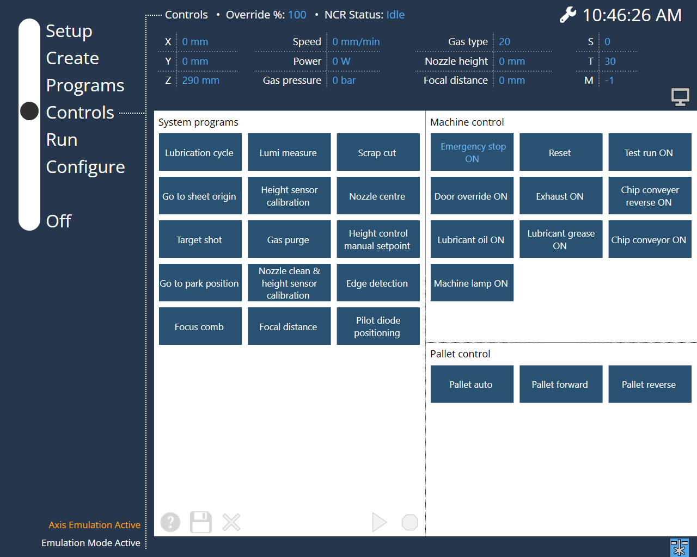

Commandes
Cette page affiche l’état des touches de l’API. Lorsque l’utilisateur clique sur une touche de l’API, l’interface utilisateur sera mise à jour en fonction de la validation par l’API. Les touches de l’API sont des numéros de texte fixes attribués. Les numéros 2800-2899 et 2900-2999 sont réservés à cet effet.
Touche1 (deuxième bouton) 2801, 2901
Si les deux textes sont présents dans le fichier texte, la touche est disponible en tant que commutateur. Si seul le premier numéro de texte est présent dans le fichier texte (par exemple 2801, mais pas 2901), la touche est disponible sous forme de bouton. Dans le bloc de données 1 de l’API, l’IHM signale si un bouton ou un interrupteur a été enfoncé.
Les règles suivantes s’appliquent :
-
Pour un bouton (un seul texte est défini, le second texte est manquant), l’état est affiché comme enfoncé (1) et non enfoncé (0).
-
Pour un interrupteur (les deux textes sont définis), l’état n’est pas affiché comme enfoncé et non enfoncé. Au lieu de cela, le bit pertinent est basculé en conséquence chaque fois que vous enfoncez et relâchez l’interrupteur.
